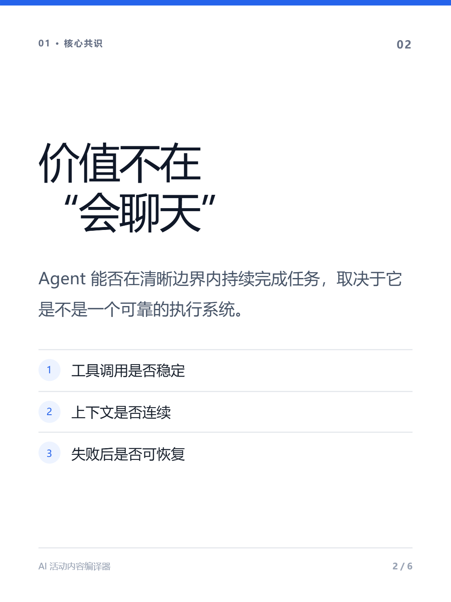
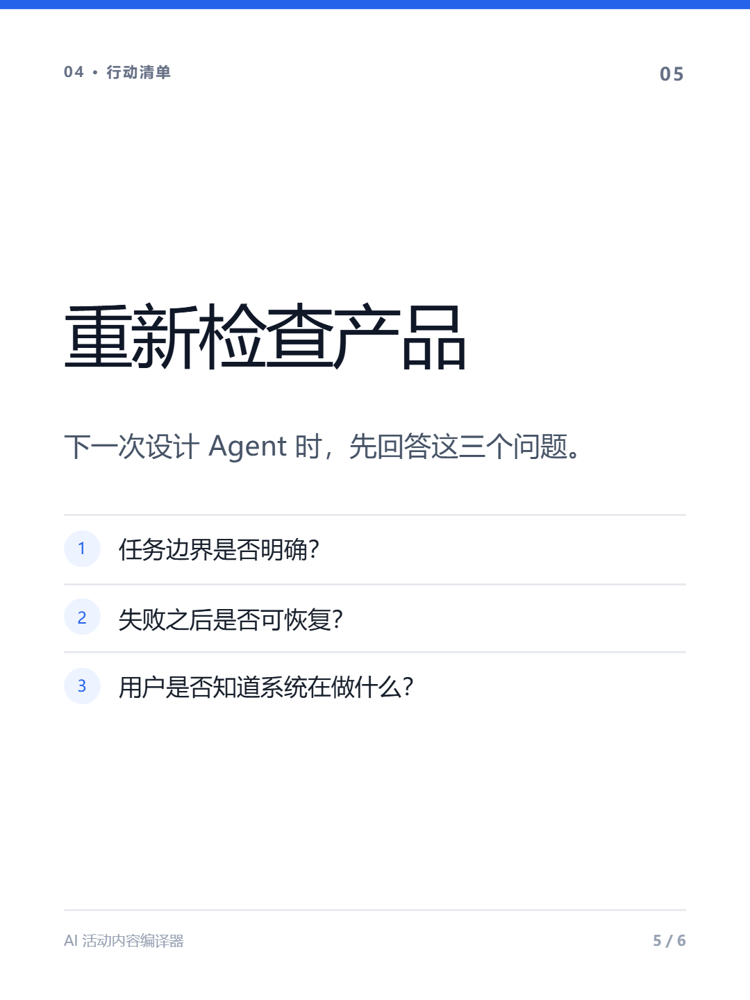
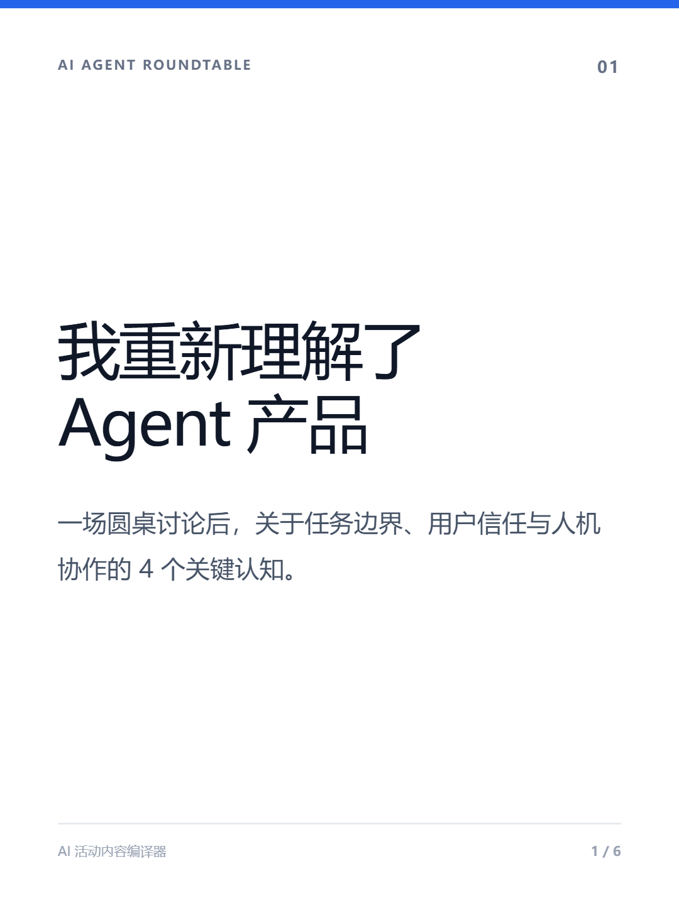

创
知识型创作者
AI、科技、产品、创业与职业发展领域，持续参加行业活动并输出专业观点。
- 手里有 1,000–10,000 字完整笔记
- 希望保留个人判断与专业深度
- 不擅长压缩、分页和视觉设计
- 想建立长期影响力与内容资产
把活动笔记、圆桌复盘和个人洞察，编译成可直接发布、值得收藏、能够复用的小红书内容资产。



AI、科技、产品、创业与职业发展领域，持续参加行业活动并输出专业观点。
正文有字符限制，必须手工删减或拆分。
纯文本没有层级、强调、卡片结构和视觉节奏。
观点被泛化，甚至被改成同质化“小红书腔”。
正文、标签、图片与源文件散落，准备过程繁琐。
先理解、再结构化、后平台化表达；让原始观点与最终资产始终可追溯。
在字符预算内保留 3–5 个高价值观点，生成正文、标题与标签。
把完整内容转换为 Block，稳定分页并输出 3:4 中文知识卡片。
活动信息、读者、语气、必须保留与不可公开内容。
字符校验、段落编号、敏感检测与结构识别。
背景、观点、案例、感悟、行动与原文锚点。
删除错误、锁定术语、合并与重排观点。
快速传播用精华版；完整沉淀用卡片版。
标题、正文、Block、分页、重点层级与标签。
模板、编辑、字符、溢出、分页与字体检查。
TXT、PNG、JSON、原文备份与 manifest。
信息密度高，需要抓出主线与认知变化。
多人观点交错，需要聚类、去重并保留引用。
过程与方法并重，需要转成可收藏的行动清单。
感受强、内容零散，需要保护隐私并整理故事线。
活动信息、字符计数、输出模式与隐私约束。
点开观点，回到对应原文段落，强调可追溯。
展示 5–12 页规划、实时预览和四套模板。
打开正文、标签、PNG、JSON 与原文备份。
验证长文到正文 / 卡片的核心价值。
从“排得好”升级到“有品牌辨识度”。
保留人工确认，减少重复操作。
让内容从一次性发布变成可度量资产。
复用同一套内容中间层，依次扩展视觉资产、发布适配器与视频生产能力。
让专业排版拥有个人与团队辨识度。
让图片真正服务于观点，而不是随机装饰。
减少从“已生成”到“已上线”的重复操作。
让一篇深度内容同时覆盖图文和短视频。